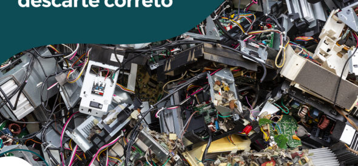

O lixo eletrônico, ou e-lixo, é o termo utilizado para descrever equipamentos eletrônicos descartados, como computadores, celulares, TVs, entre outros. Devido aos componentes tóxicos presentes nesses dispositivos, o descarte inadequado pode causar danos ao meio ambiente e à saúde.
O descarte inadequado do lixo eletrônico pode contaminar o solo e os recursos hídricos com metais pesados, como chumbo, mercúrio e cádmio, prejudicando a fauna e a flora. Além disso, muitos desses materiais podem ser reciclados, reduzindo a necessidade de extrair novos recursos da natureza.
Para descartar seu lixo eletrônico corretamente, procure pontos de coleta ou empresas especializadas. Muitas vezes, esses locais oferecem serviços de reciclagem, garantindo que os materiais sejam reaproveitados de forma segura e sustentável.